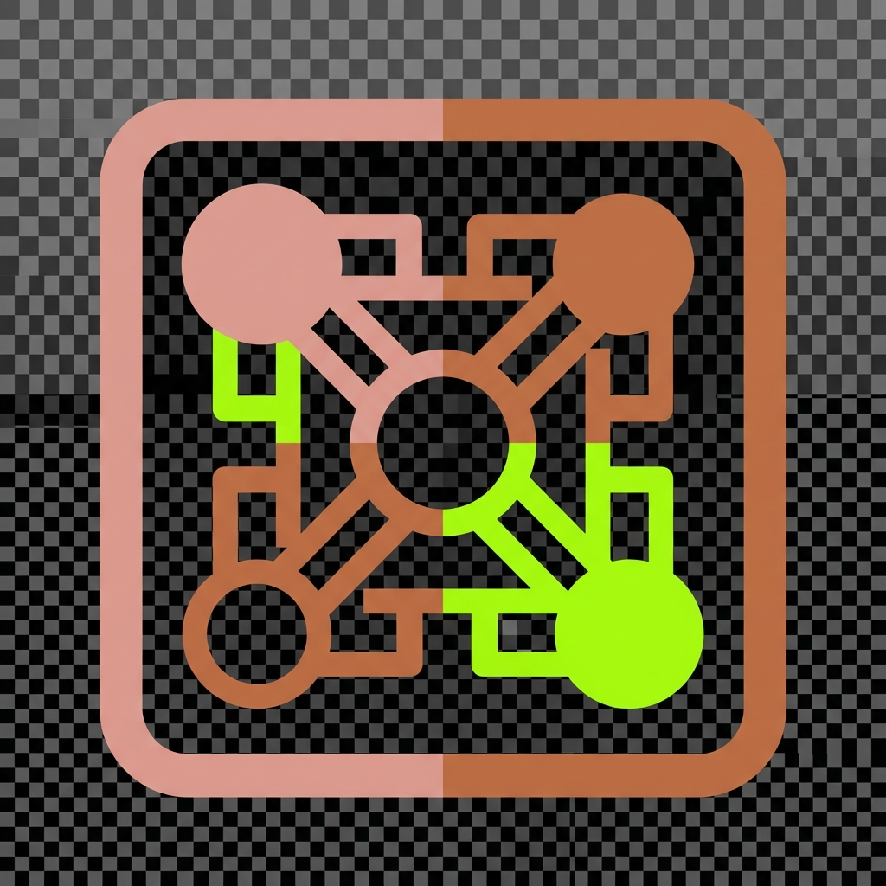

RL environments for LLM self-improvement
Complete loop: observe → generate → train → evaluate → iterate, with explicit reward design and offline replay where appropriate.

From exploration to deployment
Reinforcement learning infrastructure for self-improving AI systems
Independent research on closed-loop training, adapter routing, ensemble disagreement, and physics-informed validation.
The prism
Each stream maps to an actionable research surface: environments, policies, ensembles, and validators—composed into a single training loop.
Complete loop: observe → generate → train → evaluate → iterate, with explicit reward design and offline replay where appropriate.
Low-rank adapters treated as a discrete action space; routing policy trained to minimize regret on held-out task distributions.
Parallel detectors expose epistemic variance; disagreement triggers targeted exploration consistent with active-learning objectives.
PINNs, neural ODEs, and graph surrogates provide cheap rollouts and feasibility checks before proposals enter the training set.
Evidence
Reported values are reproducible artifacts, not slogans. Each number ties to a concrete experiment or cost model.
Lower CV across bootstrap splits ⇒ more stable policy gradients under fixed compute.
Shape error between learned adapter manifolds and reference embeddings on aligned bases.
End-to-end $/adapter including data prep, LoRA training, and evaluation on commodity GPUs.
Repository-scale engineering surface spanning training, evaluation, and deployment automation.
Token-minimal ablations for routing policies; demonstrates frugal iteration before scaling budgets.
Artifacts
Repositories emphasize evaluation harnesses, reproducible configs, and narrow-scope tools suitable for extension.
Field tuning agent and evaluation utilities for closed-loop control tasks with explicit safety constraints.
Reference containers and probes for unified-memory GPUs; publication pending with reproducible micro-benchmarks.

Additional training stacks, deployment templates, and dataset tooling released under permissive licenses.
The fortress
Heterogeneous accelerators orchestrated with health-gated startup, named volumes, and reproducible compose profiles—no bespoke snowflakes per machine class.
┌─────────────┐ metrics ┌──────────────────┐
│ Observers │ ─────────────► │ Reward / safety │
└──────┬──────┘ │ filters │
│ logits └────────┬─────────┘
▼ │
┌─────────────┐ adapters ┌────────▼─────────┐
│ Policy head │◄──────────────►│ Execution envs │
└──────┬──────┘ └────────┬─────────┘
│ rollouts │
▼ ▼
┌─────────────┐ ┌──────────────────┐
│ Trainers │──────────────►│ Versioned data │
└─────────────┘ checkpoints └──────────────────┘
Publications
Titles reflect workstreams under review; each will ship with code and evaluation manifests.
Formalizes ensemble disagreement as an acquisition function with PAC-style stopping rules.
Constrained bandit formulation with measured inference-time penalties per adapter.
Surrogate-model violations as hard filters prior to RL fine-tuning stages.
Collaboration
Open to research collaboration and scoped consulting engagements where RL methodology, evaluation rigor, and safe deployment are primary concerns.